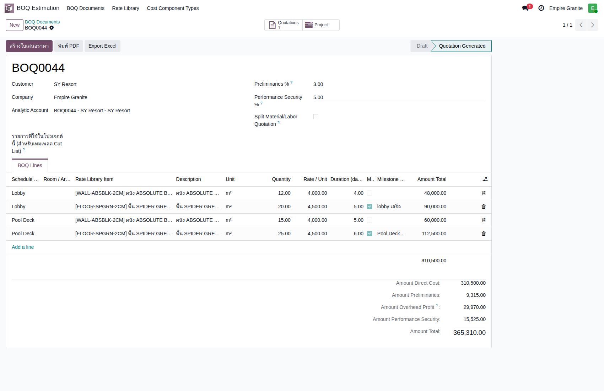
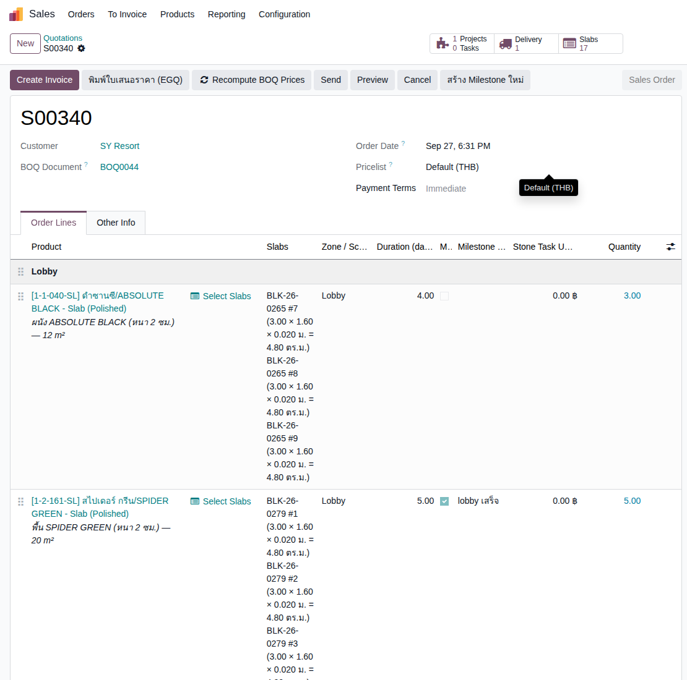
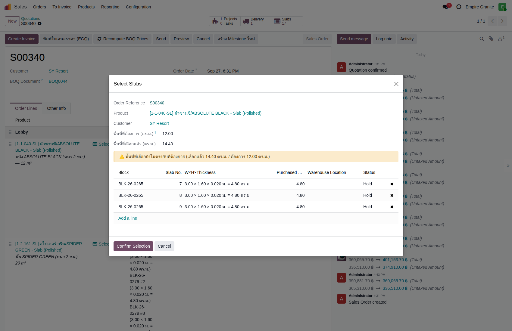
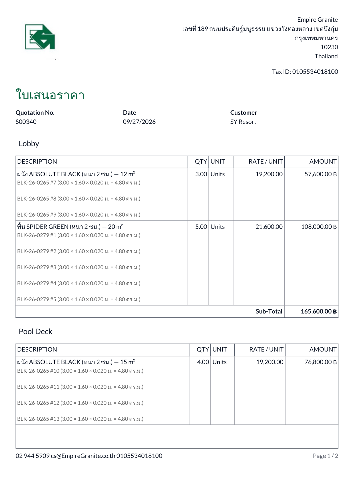
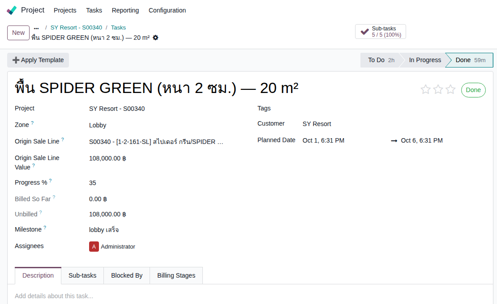
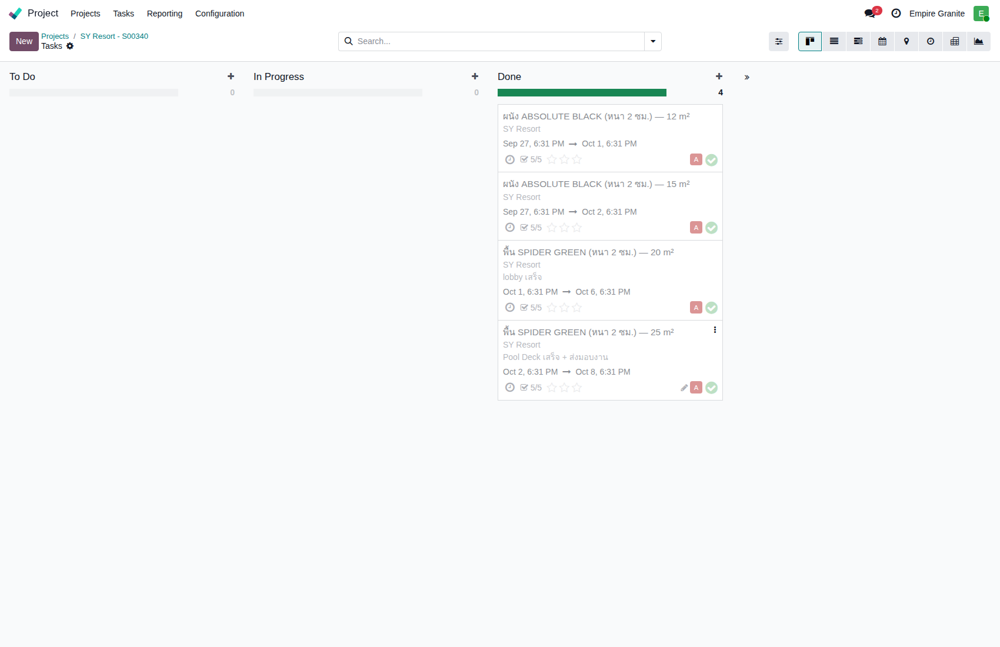
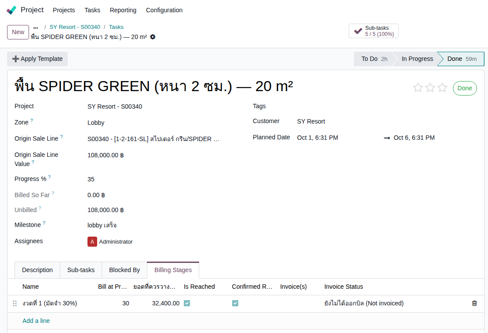

Empire Stone × Empire Granite — QA · แนวคิด EG-321
Golden Path — BOQ + Project ทำงานร่วมกัน (SY Resort)
อัปเดตล่าสุด: 1 ต.ค. 2026 — ปรับลำดับขั้น (เลือก Slab + Sync ราคา ก่อน Confirm) ให้ตรงกับฟีเจอร์ล็อกราคาหลัง Confirm · ฉบับเดิม 27 ก.ย. 2026 สร้างใหม่ทั้งหมดด้วย fixture ที่ผ่านการเลือก Slab จริงครบทุกบรรทัด
สร้างใหม่ทั้งฉบับ (ไม่ใช่แก้บางส่วน) เพราะเอกสารเดิม ("THE GRANDE VISTA HOTEL") ไม่เคยมีสต๊อก Slab จริงตอนทำ — ทุกบรรทัดต้อง Confirm ผ่าน popup เตือน "ยังไม่มีของ" เท่านั้น ฉบับนี้ใช้ fixture "SY Resort" ที่เดินสดผ่านหน้าจอจริงครบวงจร รวมถึงจุดที่เอกสารเดิมไม่เคยพิสูจน์: เลือก Slab จริงจากสต๊อก (พร้อมปุ่มใหม่ Auto-Select Slabs), Recompute ราคา BOQ ให้ตรงต้นทุน Slab จริง, ใบเสนอราคาพิมพ์แสดงขนาด Slab จริง, และ Billing Stage เวอร์ชันใหม่ที่โชว์ ยอดเงินที่ควรวางบิลจริง ไม่ใช่แค่ % ความคืบหน้า
15Test Case ทั้งหมด
10High Priority
5Medium Priority
5ฟีเจอร์ใหม่ที่โชว์ครั้งแรกในเอกสารนี้
เอกสารนี้รันสดจริงผ่านหน้าจอ (Playwright, eg-tst): ทุกภาพหน้าจอในตารางด้านล่างคือภาพจริงจากการรัน ไม่ใช่ mockup — Fixture จริง: BOQ
⚠️ ปรับลำดับขั้น 1 ต.ค. 2026: การรันสดและภาพหน้าจอทั้งหมดทำก่อนมีฟีเจอร์ล็อกราคาหลัง Confirm (ลำดับเดิมคือ Confirm ก่อนแล้วค่อยเลือก Slab) — ตอนนี้เอกสารเรียงใหม่เป็น เลือก Slab → Sync → Confirm (TC-SYR-05 ถึง 09) ตัวเลขทุกตัวในเคสที่ปรับผ่านการรันซ้ำด้วยโค้ดบน
BOQ0044 → SO S00340 (ยอดรวม ฿441,105.36 รวม VAT) → Project id 37 "SY Resort - S00340" → 4 Task จริง (252-255) + 20 Sub-task, ทุก Task ปิด Done ครบ, Milestone 2 ตัว Reached ทั้งคู่, Billing Stage id 3 บน Task 253 (Confirmed) — fixture นี้เก็บไว้ใช้ซ้ำได้บน eg-tst⚠️ ปรับลำดับขั้น 1 ต.ค. 2026: การรันสดและภาพหน้าจอทั้งหมดทำก่อนมีฟีเจอร์ล็อกราคาหลัง Confirm (ลำดับเดิมคือ Confirm ก่อนแล้วค่อยเลือก Slab) — ตอนนี้เอกสารเรียงใหม่เป็น เลือก Slab → Sync → Confirm (TC-SYR-05 ถึง 09) ตัวเลขทุกตัวในเคสที่ปรับผ่านการรันซ้ำด้วยโค้ดบน
eg-tst แล้ว (ได้ 441,105.36 และมูลค่า Task เท่าเดิมเป๊ะ) แต่ภาพหน้าจอของ TC-SYR-05 ถึง 09 ยังเป็นภาพชุดเดิม จึงอาจเห็นสถานะ "Sales Order" ในภาพแม้ขั้นนั้นใบยังเป็น Draft — จะถ่ายใหม่เมื่อรันสดซ้ำ
🆕 5 ฟีเจอร์ใหม่ที่เอกสารเดิมไม่เคยมี เพราะสร้างก่อนจะมีของจริง:
- เลือก Slab จริงจากสต๊อก — เอกสารเดิม (TC-BPH-07 เดิม) ระบุตรงๆ ว่า "ยังไม่มีสต๊อกจริง" ทุกบรรทัด Confirm ผ่าน popup เตือนเท่านั้น ฉบับนี้เลือก Slab จริงครบทุกบรรทัด
- ปุ่ม Auto-Select Slabs — เลือก Slab ให้อัตโนมัติจนครบพื้นที่ที่ต้องการ พร้อมแจ้งเตือนเมื่อเลือกได้ไม่พอดี (เพราะ Slab มีขนาดตายตัว ไม่สามารถตัดแบ่งได้)
- Recompute BOQ Prices แบบ bulk — ย้ายจากปุ่มต่อบรรทัดมาเป็นปุ่มเดียวที่ header ทำทุกบรรทัดพร้อมกัน
- ใบเสนอราคา (EGQ) พิมพ์แสดงขนาด Slab จริง — ใต้แต่ละบรรทัดสินค้าจะโชว์เลข Block/ขนาด W×H×หนา ของทุกแผ่นที่เลือกจริง
- Billing Stage โชว์ "ยอดที่ควรวางบิลงวดนี้" เป็นตัวเงิน — ไม่ใช่แค่ % ความคืบหน้าเหมือนเดิม คำนวณเป็นส่วนต่างจากงวดก่อนหน้าอัตโนมัติ
1. เตรียม BOQ หลายวัสดุ หลาย Zone
ใช้ Rate ที่มีอยู่แล้วในระบบ (ไม่ต้องสร้างใหม่) — 4 บรรทัด (ผนัง+พื้น × 2 Zone) พร้อม Preliminaries/Performance Security
| TC ID | Scenario | Precondition | Steps | ข้อมูลตัวอย่าง | Expected Result | ภาพหน้าจอ | Priority |
|---|---|---|---|---|---|---|---|
| TC-SYR-01 | เปิดเอกสาร BOQ ใหม่ ผูกลูกค้า SY Resort | - |
|
ลูกค้า = "SY Resort" | เปิดฟอร์ม BOQ Document ใหม่ สถานะ Draft พร้อม Analytic Account ผูกอัตโนมัติ |  ดูภาพ |
High |
| TC-SYR-02 | เพิ่ม 4 บรรทัด BOQ (ผนัง+พื้น × 2 Zone) พร้อม Duration/Milestone Milestone ติ๊กเฉพาะบรรทัด "พื้น" ของแต่ละ Zone เพราะเป็นบรรทัดสุดท้ายที่ทำเสร็จ (ผนังทำก่อนพื้นเสมอ) |
ทำ TC-SYR-01 เสร็จแล้ว |
|
Lobby: ผนัง 12 ตร.ม. (4 วัน) + พื้น 20 ตร.ม. (5 วัน, Milestone "lobby เสร็จ") Pool Deck: ผนัง 15 ตร.ม. (5 วัน) + พื้น 25 ตร.ม. (6 วัน, Milestone "Pool Deck เสร็จ + ส่งมอบงาน") |
4 BOQ Lines ราคา/หน่วยเติมอัตโนมัติจาก Rate — Amount Direct Cost รวม = 310,500 บาท | ดูภาพ | High |
| TC-SYR-03 | ตั้ง Preliminaries 3% + Performance Security 5% ตรวจยอดรวม | ทำ TC-SYR-02 เสร็จแล้ว |
|
Preliminaries 3%, Performance Security 5% | Direct Cost 310,500 + Preliminaries 9,315 + Overhead&Profit 29,970 + Performance Security 15,525 = Amount Total 365,310 บาท | ดูภาพ | High |
2. ออกใบเสนอราคา + เปิดสวิตช์ Project
BOQ ส่งราคา+กำหนดงานให้ใบเสนอราคาอัตโนมัติ แล้วค่อยเปิดสวิตช์ Project เพิ่ม
| TC ID | Scenario | Precondition | Steps | ข้อมูลตัวอย่าง | Expected Result | ภาพหน้าจอ | Priority |
|---|---|---|---|---|---|---|---|
| TC-SYR-04 | กด "สร้างใบเสนอราคา" (Generate Quotation) | ทำ TC-SYR-03 เสร็จแล้ว |
|
- | ได้ใบเสนอราคาใหม่ S00340 มี Section คั่นทั้ง 2 Zone field "BOQ Document" ชี้กลับไป BOQ0044 |  ดูภาพ |
High |
| TC-SYR-05 | ติ๊กเปิดสวิตช์ "Sold as Project" (ยังไม่ Confirm) ลำดับใหม่ (1 ต.ค. 2026): เลือก Slab จริง + Sync ราคา ก่อน Confirm แล้วค่อย Confirm ทีหลังใน TC-SYR-09 — เพราะหลัง Confirm ระบบล็อกยอดบรรทัดหิน ไม่ให้เปลี่ยนตามจำนวน Slab ที่เลือกอีกต่อไป (ดูเอกสาร "สวิตช์ BOQ ครบวงจร" TC-BOQ-17) |
ทำ TC-SYR-04 เสร็จแล้ว |
|
- | บันทึกสำเร็จ ใบยังเป็น Quotation (Draft) ยอดก่อนภาษี 365,310.00 บาท (รวม VAT 7% = 390,881.70) — บรรทัดหิน 4 บรรทัดยังเป็น จำนวน 1 × ราคาจาก BOQ (ผนัง Lobby 48,000 / พื้น Lobby 90,000 / ผนัง Pool Deck 60,000 / พื้น Pool Deck 112,500) บรรทัดสรุป 3 บรรทัด = 9,315 / 29,970 / 15,525 | ดูภาพ | High |
3. เลือก Slab จริงจากสต๊อก 🆕
จุดที่เอกสารเดิมไม่เคยพิสูจน์ได้เลย เพราะไม่มีสต๊อกตอนทำ — ใช้ปุ่มใหม่ Auto-Select Slabs
| TC ID | Scenario | Precondition | Steps | ข้อมูลตัวอย่าง | Expected Result | ภาพหน้าจอ | Priority |
|---|---|---|---|---|---|---|---|
| TC-SYR-06 | กด "Select Slabs" บนบรรทัดผนัง Lobby ใช้ปุ่ม Auto-Select 🆕 Slab มีขนาดตายตัว (3.00×1.60 ม. = 4.80 ตร.ม./แผ่น) ตัดแบ่งไม่ได้ — เลือก 3 แผ่นเพื่อให้ครบ 12 ตร.ม. จะได้จริง 14.40 ตร.ม. เกินเป้าเล็กน้อย ระบบเตือนเป็นสีเหลืองให้รู้ ไม่ใช่ error |
ทำ TC-SYR-05 เสร็จแล้ว |
|
ต้องการ 12.00 ตร.ม. ระบบเลือกให้ 3 แผ่น = 14.40 ตร.ม. | ระบบเลือก Slab จากสต๊อกจริงให้อัตโนมัติ 3 แผ่น (BLK-26-0265 #7/#8/#9) พร้อมข้อความเตือน "พื้นที่ที่เลือกยังไม่ตรงกับที่ต้องการ (เลือกแล้ว 14.40 ตร.ม. / ต้องการ 12.00 ตร.ม.)" |  ดูภาพ |
High |
| TC-SYR-07 | ทำซ้ำให้ครบทั้ง 4 บรรทัด ตรวจราคาอัปเดตจากจำนวน Slab จริง | ทำ TC-SYR-06 เสร็จแล้ว |
|
ผนัง Lobby 3 แผ่น×19,200=57,600 / พื้น Lobby 5 แผ่น×21,600=108,000 / ผนัง Pool Deck 4 แผ่น×19,200=76,800 / พื้น Pool Deck 5 แผ่น×21,600=108,000 | ทุกบรรทัดมีคอลัมน์ "Slabs" แสดงเลข Block+ขนาดจริงของทุกแผ่นที่เลือก ราคาบรรทัดคำนวณจากจำนวนแผ่น×ราคาต่อแผ่น ไม่ใช่ตร.ม.เดิมจาก BOQ · ยอดรวมใบก่อนภาษีขยับจาก 365,310.00 เป็น 405,210.00 (รวม VAT 7% = 433,574.70) เพราะ Slab จริงเกินพื้นที่ที่ BOQ ตั้งไว้ — ใบยังเป็น Draft จึงขยับตามได้ตามปกติ บรรทัดสรุป 3 บรรทัดยังเป็นค่าเดิม (9,315 / 29,970 / 15,525) รอ Sync ใน TC-SYR-08 | ดูภาพ | High |
4. Sync ราคา BOQ ให้ตรงต้นทุน Slab จริง 🆕
ราคาที่ตั้งไว้ตอนทำ BOQ เป็นราคาประมาณจาก Rate — พอเลือก Slab จริงแล้วต้อง sync ให้ตรงกันอีกที
| TC ID | Scenario | Precondition | Steps | ข้อมูลตัวอย่าง | Expected Result | ภาพหน้าจอ | Priority |
|---|---|---|---|---|---|---|---|
| TC-SYR-08 | Sync บรรทัดสรุปยอด 3 บรรทัดให้ตรงกับ Direct Cost จริง (ใช้ % เดิม) 🆕 ใช้ลิงก์ "Recompute จาก Slab จริง (ใช้ % เดิม)" ในแถบเตือนสีเหลืองใต้ตาราง Order Lines — คำนวณ Preliminaries / Project Management Fee / Performance Security ใหม่ ตาม % เดิมที่ตั้งไว้ แต่จากยอดบรรทัดหินจริงหลังเลือก Slab · ปุ่ม "Recompute BOQ Prices" บนหัวใบ เป็นคนละปุ่ม (ดึงราคาบรรทัดกลับตาม Rate) และมีให้เห็นเฉพาะใบที่ยังไม่ Confirm เช่นกัน ในขั้นนี้กดแล้วยอดไม่เปลี่ยน เพราะบรรทัดหินตามจำนวน Slab อยู่แล้ว |
ทำ TC-SYR-07 เสร็จแล้ว |
|
- | บรรทัดสรุปยอด 3 บรรทัดคำนวณใหม่จาก Direct Cost จริง 405,210.00: Preliminaries (3%) = 10,512.00 · Project Management Fee = 33,816.00 · Performance Security (5%) = 17,520.00 · ยอดรวมใบก่อนภาษี = 412,248.00 (รวม VAT 7% = 441,105.36) · แถบเตือน "ราคายังไม่ตรงกับต้นทุนจริง" หายไป | ดูภาพ | Medium |
5. ยืนยันใบสั่งขาย (ล็อกราคา) + พิมพ์ใบเสนอราคาแสดงขนาด Slab จริง 🆕
Confirm หลังเลือก Slab + Sync ครบ — ระบบจดยอดที่ตกลงกับลูกค้าไว้ แล้วลูกค้าเห็นขนาด Slab จริงในใบเสนอราคา
| TC ID | Scenario | Precondition | Steps | ข้อมูลตัวอย่าง | Expected Result | ภาพหน้าจอ | Priority |
|---|---|---|---|---|---|---|---|
| TC-SYR-09 | ยืนยันคำสั่งขาย (Confirm) ระบบสร้าง Project + 4 Task และล็อกยอดบรรทัดหิน 🆕 ตั้งแต่ 1 ต.ค. 2026 หลัง Confirm ยอดของบรรทัดหินจะไม่เปลี่ยนแม้มีการเลือก/ปล่อย Slab เพิ่ม (ราคาต่อแผ่นถูกปรับให้ จำนวน × ราคา = ยอดเดิมเสมอ) ส่วนต่างไปแสดงที่ Stone Slab > Reports > Slab Price Variance — รายละเอียดและเคสทดลองดูที่เอกสาร "สวิตช์ BOQ ครบวงจร" TC-BOQ-16 ถึง 21 |
ทำ TC-SYR-08 เสร็จแล้ว |
|
- | SO ยืนยันสำเร็จ (state = Sales Order) ยอดก่อนภาษี 412,248.00 (รวม VAT 7% = 441,105.36) ตรงกับก่อนกด Confirm เป๊ะ · ระบบสร้าง Project + 4 Task ให้อัตโนมัติ โดยมูลค่าของ Task (Origin Sale Line Value) เป็นยอดหลังเลือก Slab: ผนัง Lobby 57,600 · พื้น Lobby 108,000 · ผนัง Pool Deck 76,800 · พื้น Pool Deck 108,000 | ดูภาพ | High |
| TC-SYR-10 | กด "พิมพ์ใบเสนอราคา (EGQ)" ตรวจ PDF แสดงขนาด Slab จริง | ทำ TC-SYR-09 เสร็จแล้ว |
|
- | PDF แยกตาราง Zone ละ 1 ตาราง ใต้ชื่อสินค้าแต่ละบรรทัดโชว์เลข Block+ขนาด W×H×หนา=ตร.ม. ของทุกแผ่นที่เลือกจริง (เช่น "BLK-26-0265 #7 (3.00×1.60×0.020 ม. = 4.80 ตร.ม.)") |  ดูภาพ |
Medium |
6. ตรวจ Project + ใส่ Template + ปิดงานจน Milestone Reached
4 Task หลัก (ผูกกลับ BOQ ผ่าน Origin Sale Line ตรงๆ) แตกเป็น 5 ขั้นตอนย่อยจริงต่อ Task
| TC ID | Scenario | Precondition | Steps | ข้อมูลตัวอย่าง | Expected Result | ภาพหน้าจอ | Priority |
|---|---|---|---|---|---|---|---|
| TC-SYR-11 | เปิด Task ตรวจฟิลด์ Zone/Origin Sale Line field "Sales Order Item" มาตรฐานของ Odoo ถูกซ่อนแล้ว (ไม่ได้ใช้งาน) — Task ผูกกับใบสั่งขายผ่านฟิลด์ "Origin Sale Line" ของระบบเราเองเท่านั้น ซึ่งเป็นตัวกำหนดว่าแท็บ Billing Stages จะขึ้นให้เห็นหรือไม่ |
ทำ TC-SYR-09 เสร็จแล้ว |
|
- | Project "SY Resort - S00340" มี 4 Task ผูก Zone ถูกต้อง Task ที่เปิดมี Zone = Lobby, Origin Sale Line ชี้กลับ S00340, Origin Sale Line Value = 108,000 บาท ไม่มีฟิลด์ "Sales Order Item" ปรากฏ |  ดูภาพ |
High |
| TC-SYR-12 | Apply Task Template Set ให้ทุก Task | ทำ TC-SYR-11 เสร็จแล้ว |
|
- | แต่ละ Task มี 5 Sub-task ย่อยจริง ("Sub-tasks 5/5" แสดงบนหัว Task) วันที่ Planned เรียงต่อกันอัตโนมัติตาม Duration |  ดูภาพ |
Medium |
| TC-SYR-13 | ปิด Sub-task+Task ทุกใบให้ Done ครบ 4 Task ตรวจ Milestone ขึ้น Reached | ทำ TC-SYR-12 เสร็จแล้ว |
|
- | ทุก Task ขึ้น "Done" การ์ดย้ายไปคอลัมน์ Done บน Kanban — Milestone ทั้ง 2 ("lobby เสร็จ" / "Pool Deck เสร็จ + ส่งมอบงาน") ขึ้นสถานะ Reached ถูกต้องทุกตัว | ดูภาพ | High |
7. ติดตาม Billing Stage ตาม Progress 🆕
Billing Stage เวอร์ชันใหม่ที่โชว์ยอดเงินจริงที่ควรวางบิล ไม่ใช่แค่ % ความคืบหน้าเหมือนเดิม
| TC ID | Scenario | Precondition | Steps | ข้อมูลตัวอย่าง | Expected Result | ภาพหน้าจอ | Priority |
|---|---|---|---|---|---|---|---|
| TC-SYR-14 | กรอก Progress 35% + ตั้งเกณฑ์เก็บเงินงวดที่ 1 (30%) ตรวจ "ยอดที่ควรวางบิลงวดนี้" 🆕 คอลัมน์ "ยอดที่ควรวางบิลงวดนี้" คำนวณจากส่วนต่างของงวดนี้กับงวดก่อนหน้า — งวดแรกไม่มีงวดก่อนหน้า จึงเท่ากับ % เกณฑ์ × มูลค่า Task ตรงๆ |
ทำ TC-SYR-13 เสร็จแล้ว |
|
Origin Sale Line Value = 108,000 บาท, เกณฑ์งวดที่ 1 = 30% | "ยอดที่ควรวางบิลงวดนี้" = 32,400 บาท (30% × 108,000) — "Is Reached" ✅ (เพราะ 35 ≥ 30) — ระบบโพสต์ chatter แจ้งเตือนอัตโนมัติ + สร้าง Activity ให้ PM |  ดูภาพ |
High |
| TC-SYR-15 | PM กดยืนยันพร้อมเก็บเงินงวดที่ 1 | ทำ TC-SYR-14 เสร็จแล้ว |
|
- | งวดที่ 1: "Confirmed" ✅ พร้อมวันที่ยืนยัน — Activity ของงวดนี้เคลียร์อัตโนมัติ (ยังต้องไปออก Invoice จริงผ่าน Down Payment wizard เองแยกต่างหาก ระบบไม่ออกบิลให้อัตโนมัติ) | ดูภาพ | Medium |